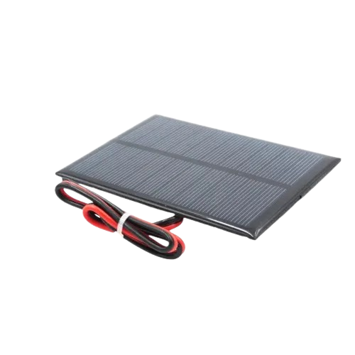
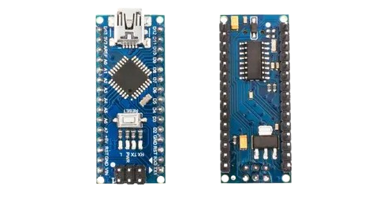
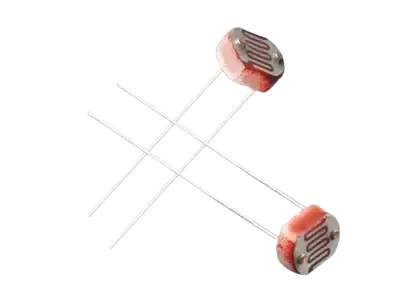
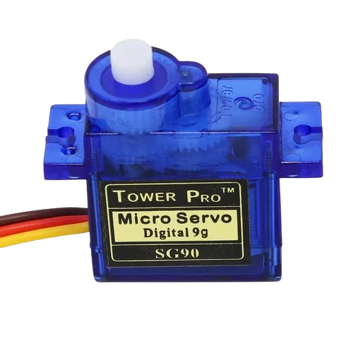
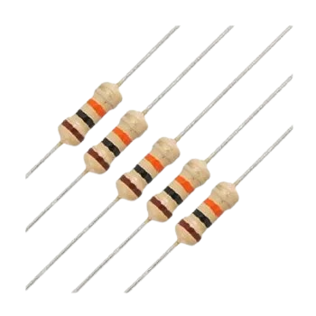
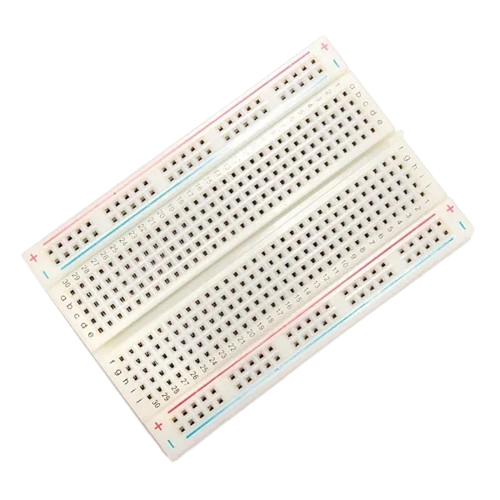
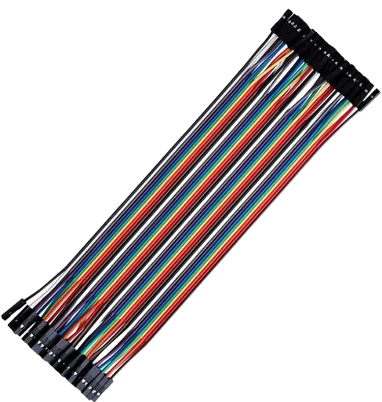
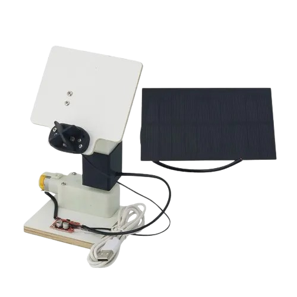

Introducción
El proyecto consiste en el diseño y construcción de un Solar Tracker o seguidor solar: un sistema automatizado que utiliza sensores de luz para detectar hacia dónde existe una mayor iluminación y, mediante una placa Arduino Nano y servomotores, modificar de forma dinámica la posición del mecanismo que sostiene un panel fotovoltaico. Tal como señala el Departamento de Energía de Estados Unidos, los sistemas fotovoltaicos convierten la luz solar en electricidad, y las estructuras de seguimiento permiten mover automáticamente los paneles para seguir la trayectoria del Sol. En una instalación convencional fija, el panel puede quedar desalineado a medida que el Sol cambia de posición durante el día, reduciendo su eficiencia; este prototipo busca solucionar precisamente ese problema mediante una corrección automática basada en la lectura de cuatro sensores LDR y resistencias de 10 kΩ.
Desarrollo y Valor Educativo
Durante la realización del proyecto se combinaron conocimientos de electricidad, electrónica, programación y fabricación mecánica, abarcando desde la investigación inicial y la impresión 3D de piezas hasta el montaje de componentes y pruebas de código. Un detalle clave corregido durante el proceso fue ajustar el movimiento de los servomotores de 360° a 180°, logrando que el sistema operara con normalidad. Su principal valor educativo radica en integrar control automático y energía renovable en un prototipo funcional a escala, permitiendo estudiar de forma práctica la relación directa entre la orientación de un panel, la radiación recibida y la generación de energía fotovoltaica.
¿Cómo funciona?
El Solar Tracker es un sistema de control automático diseñado para mantener el panel fotovoltaico orientado hacia la zona con mayor intensidad de luz. Para obtener esa información utiliza cuatro sensores LDR, cuya respuesta eléctrica cambia según la iluminación que reciben; estas señales llegan a las entradas analógicas del Arduino Nano a través del circuito montado en protoboard y apoyado por resistencias de 10 kΩ. El Arduino analiza las diferencias entre las lecturas y genera las órdenes necesarias para controlar los servomotores de 180°, que modifican la posición de la estructura impresa en 3D. De esta manera, el prototipo puede corregir su orientación durante el funcionamiento, buscando mejorar la captación de radiación solar mediante un movimiento estable y un circuito eléctrico continuo y seguro.
Paso a paso
Cuatro fotoresistencias reciben la luz ambiental y miden su intensidad desde distintos puntos.
El Arduino Nano compara las entradas analógicas y determina hacia dónde existe mayor iluminación.
Los servomotores de 180° mueven la estructura 3D para orientar el panel hacia el punto de mayor luz.
El sistema repite la lectura y el ajuste de forma continua, manteniendo un funcionamiento estable y seguro.
Materiales
Para la construcción del prototipo se emplean componentes electrónicos, elementos de interconexión y piezas mecánicas que trabajan de forma integrada. Los sensores LDR detectan las variaciones de intensidad lumínica, el Arduino Nano procesa las señales analógicas y los servomotores ejecutan el posicionamiento del panel, mientras que la protoboard, las resistencias, los cables Dupont y la estructura impresa en 3D permiten implementar un circuito estable y un mecanismo de orientación preciso.

Panel solar 5V 200mA

Arduino Nano

LDR (x4 5528)

Servomotores de 180°

Resistencias de 10 kΩ

Protoboard

Cables Dupont

Estructura 3D
Conclusión
El proyecto Solar Tracker demuestra de manera práctica cómo la automatización puede mejorar el aprovechamiento de la radiación solar mediante un sistema capaz de detectar variaciones de iluminación y corregir de forma autónoma la orientación de un panel fotovoltaico. La integración de sensores LDR, un Arduino Nano, resistencias y servomotores permite transformar las diferencias de luz en decisiones de control y movimientos mecánicos precisos, manteniendo el panel orientado hacia la zona de mayor intensidad lumínica.
Además de su aplicación energética, el prototipo permitió integrar conocimientos de electricidad, electrónica, programación y fabricación mecánica en una solución funcional a escala. El desarrollo evidencia la importancia de combinar sistemas de control automático con tecnologías renovables, y sirve como base para comprender cómo este tipo de mecanismos puede aumentar la eficiencia de captación solar y evolucionar hacia diseños de mayor tamaño, precisión y rendimiento.
"Buenos cristianos y honestos ciudadanos"
"Lo que te propongas lo puedes lograr..."